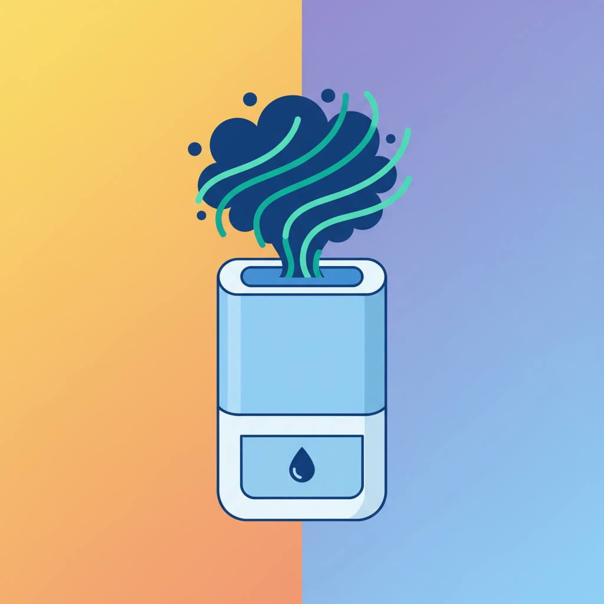
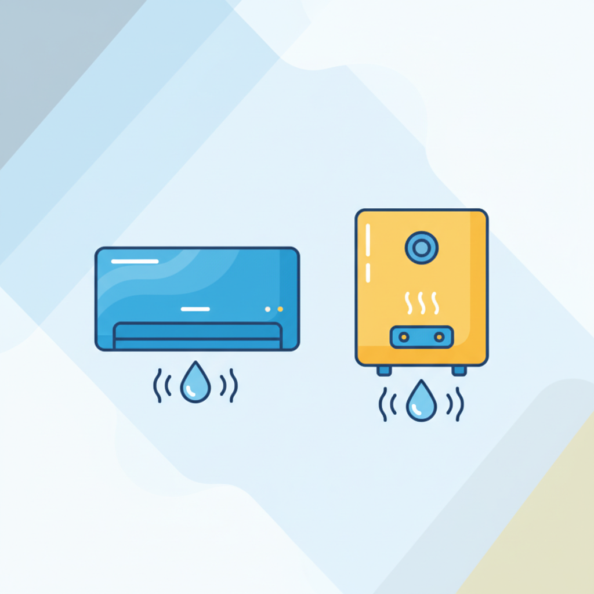
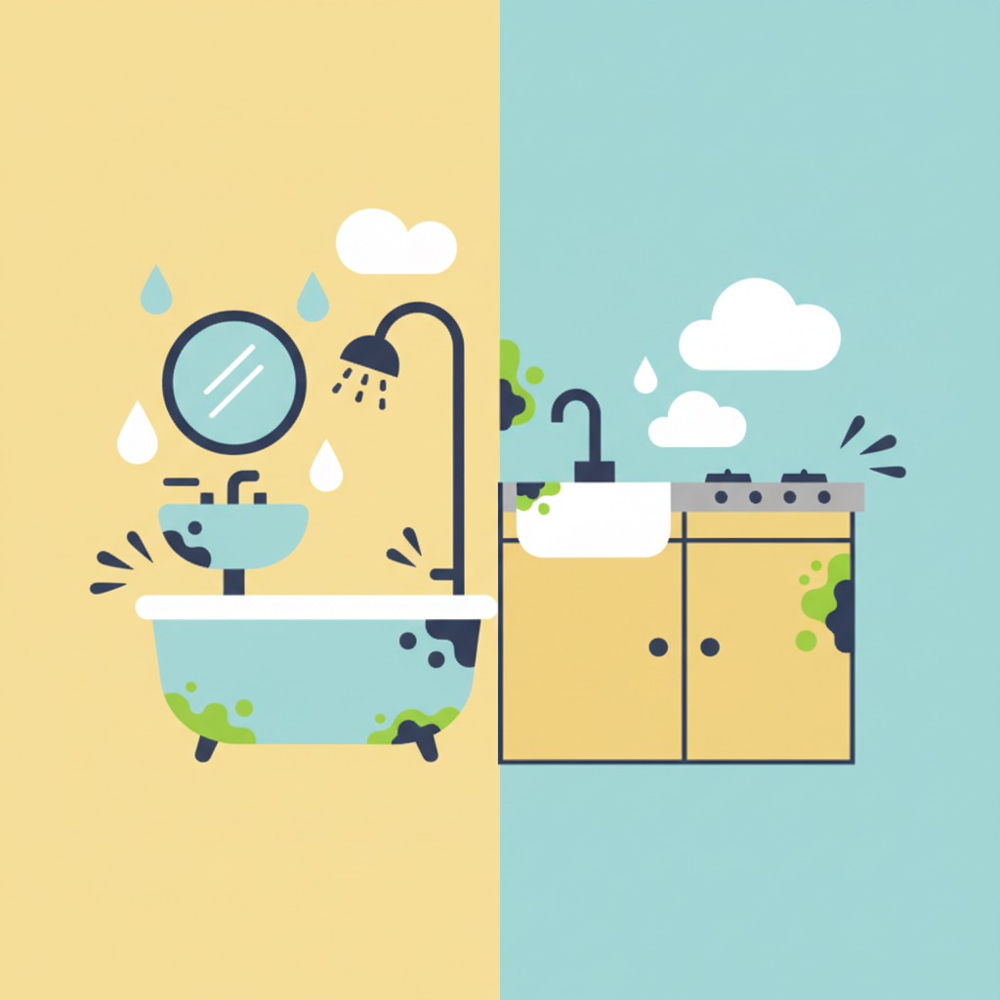

안녕하세요, 스마트 라이프 블로그 독자 여러분!
벌써 5월 말, 거리마다 연둣빛 싱그러움이 가득한 계절이지만, 달력을 넘겨보면 불현듯 다가올 여름의 불청객, 바로 '장마'가 눈에 들어옵니다. 장마철만 되면 왜 그렇게 집안 공기가 축축하고 꿉꿉한지, 빨래는 마르지 않고 괜스레 기분까지 처지는 날들이 많죠? 특히 옷장 뒤나 화장실 구석에서 슬금슬금 고개를 내미는 검은 곰팡이는 생각만 해도 등골이 오싹해집니다.
하지만 걱정 마세요! 장마철 습기와 곰팡이는 충분히 예방하고 관리할 수 있습니다. 오늘은 2026년 장마철을 뽀송하게 보낼 수 있도록, 집안 습기 제거와 곰팡이 방지를 위한 실용적인 꿀팁 7가지를 자세히 알려드릴게요. 저만 믿고 따라오시면 올여름은 상쾌하고 건강한 집에서 보내실 수 있을 거예요!
1. 적극적인 환기가 핵심! 타이밍과 방법을 바꿔보세요
"비 오는데 문 열어두면 더 습해지는 거 아니야?" 라고 생각하실 수 있어요. 물론 밖이 폭우가 쏟아지는 날에는 힘들지만, 비가 소강상태이거나 오전에 잠깐 멈출 때를 노려보세요. 덥고 습한 날에도 짧게나마 창문을 활짝 열어 집안 공기를 순환시키는 것이 중요합니다.
* 짧고 굵게!: 하루 2~3회, 한 번에 10~15분 정도만이라도 창문을 열어 공기를 바꿔주세요. 맞바람이 통하도록 여러 곳의 창문을 동시에 여는 것이 좋습니다.
* 비 오는 날도 OK: 비가 약하게 오거나 잠시 그쳤을 때, 창문을 살짝 열어두면 바깥의 공기가 안쪽의 습하고 탁한 공기를 밀어내어 습도 조절에 도움이 됩니다. 이때 방문도 활짝 열어 집안 전체의 공기를 순환시켜 주세요.
* 선풍기나 서큘레이터 활용: 환기 시 선풍기나 서큘레이터를 창문 쪽으로 향하게 틀면 공기 순환 효과를 극대화할 수 있습니다.
2. 제습기는 선택 아닌 필수! 똑똑하게 사용하기

이제 제습기는 에어컨만큼이나 필수가전이 되었죠. 2026년형 제습기들은 저전력 고효율 제품들이 많아졌으니, 아직 없으시다면 장만을 고려해보세요! 제습기를 그냥 틀어놓기만 하는 것보다 더 효과적인 사용법이 있습니다.
* 적정 습도 유지: 실내 습도는 50~60%가 가장 쾌적하고 곰팡이 번식을 막는 데 효과적입니다. 제습기 희망 습도를 이 범위에 맞춰 설정해두면 좋습니다.
* 문 닫고 가동: 제습기 가동 중에는 창문과 방문을 닫아두는 것이 효율을 높이는 방법입니다. 불필요하게 외부 공기까지 제습하지 않도록 해주세요.
* 부분 집중 제습: 습기가 많은 공간(예: 세탁실, 옷방, 욕실 앞)에 제습기를 이동하며 집중적으로 사용하는 것이 좋습니다. 특히 빨래를 실내에서 건조할 때는 빨래 주변에 제습기를 두면 훨씬 빠르게 마릅니다.
* 제습기 관리: 주기적으로 물통을 비우고 필터를 청소해야 제습 효율을 유지하고 위생적으로 사용할 수 있습니다.
3. 에어컨과 보일러도 제습 기능이 있다는 사실!

"에어컨은 춥기만 하고, 보일러는 더울 때 켜는 거 아니야?" 라고 생각하셨다면 오산입니다! 에어컨과 보일러도 습기 제거에 큰 도움이 될 수 있습니다.
* 에어컨 제습 모드: 대부분의 에어컨에는 '제습' 기능이 탑재되어 있습니다. 이 기능을 활용하면 냉방 기능 없이 습기만 제거할 수 있어 전기료 부담을 줄이면서 쾌적함을 유지할 수 있습니다.
* 보일러 활용 (짧게): 비가 계속 와서 집안이 너무 축축할 때는 보일러를 10~20분 정도만 약하게 틀어주세요. 따뜻한 공기는 차가운 공기보다 수분을 더 많이 머금었다가 증발시키기 때문에, 일시적으로 실내 온도를 높여 습기를 제거하는 데 도움이 됩니다. 그 후 바로 환기를 시켜주면 꿉꿉함이 사라지는 것을 느낄 수 있을 거예요.
4. 곰팡이 명당! 욕실과 주방 특별 관리

습기가 가장 많이 발생하는 공간인 욕실과 주방은 특별한 관리가 필요합니다. 곰팡이가 한 번 생기면 제거하기가 정말 어렵고, 건강에도 좋지 않아요.
* 욕실:
* 사용 후 바로 물기 제거: 샤워 후에는 반드시 물기를 닦아내고, 환풍기를 틀거나 문을 살짝 열어 환기시켜 주세요.
* 틈새 관리: 타일 사이의 줄눈은 곰팡이가 가장 좋아하는 곳입니다. 락스 희석액이나 베이킹소다 등으로 주기적으로 청소하고 건조하게 유지해야 합니다.
* 세면대/샤워기 수납: 물건들을 바닥에 두지 말고 벽걸이형 수납용품을 활용해 물이 고이지 않도록 합니다.
* 주방:
* 요리 중/후 환기: 요리할 때는 레인지 후드를 반드시 사용하고, 요리 후에도 잠시 창문을 열어 습기와 음식 냄새를 함께 제거합니다.
* 싱크대 주변 청소: 설거지 후에는 싱크대 주변 물기를 닦아내고, 음식물 쓰레기는 바로 처리하여 냄새와 습기 발생을 막습니다.
5. 숨은 습기 잡는 천연 제습제 활용법
화학 제품 없이도 집안 구석구석 습기를 잡을 수 있는 똑똑한 방법들이 있습니다. 비용도 저렴하고 환경에도 좋으니 꼭 활용해보세요!
* 숯: 숯은 습기를 흡수하고 건조하면 다시 사용할 수 있는 천연 제습제입니다. 옷장, 신발장, 냉장고 등에 두면 제습과 탈취 효과를 동시에 볼 수 있습니다. 가끔 햇볕에 말려 재활용해주세요.
* 굵은 소금: 넓은 접시에 굵은소금을 담아 습한 곳에 두면 습기를 빨아들입니다. 물이 차면 전자레인지에 돌리거나 햇볕에 말려 다시 사용할 수 있어요.
* 베이킹소다: 베이킹소다도 훌륭한 탈취 및 제습제입니다. 작은 그릇에 담아 신발장, 옷장, 서랍 등에 넣어두세요.
* 신문지: 신문지는 습기를 빨아들이는 능력이 탁월합니다. 옷장 바닥, 신발 안에 넣어두거나, 젖은 우산 주변에 놓아두면 습기 제거에 효과적입니다.
6. 젖은 빨래는 빠르게! 건조기/건조대 스마트 활용
장마철 실내 빨래 건조는 집안 습도를 높이는 주범 중 하나입니다. 뽀송한 빨래와 쾌적한 집안을 위해 다음 팁을 활용해보세요.
* 건조기 적극 활용: 미세먼지 걱정 없는 2026년, 건조기는 정말 효자 가전입니다. 장마철에는 아낌없이 건조기를 활용하세요.
* 실내 건조 시 전략:
* 간격 넓게: 빨래와 빨래 사이 간격을 넓게 벌려 공기가 잘 통하도록 널어주세요.
* 제습기/선풍기 동원: 빨래 건조대 옆에 제습기나 선풍기를 두고 같이 작동시키면 건조 시간이 훨씬 단축됩니다.
* 밀폐 공간 활용: 작은 방에 빨래를 널고 문을 닫은 후 제습기를 가동하면 건조 효율을 극대화할 수 있습니다.
* 세탁물 미리 제거: 세탁기 안에 젖은 빨래를 오래 두지 마세요. 곰팡이와 냄새의 원인이 됩니다.
7. 가구와 벽 사이 공간 확보로 공기 순환 돕기
큰 가구들이 벽에 바짝 붙어 있으면, 가구 뒷면이나 벽면에 공기가 통하지 않아 습기가 응결되고 곰팡이가 생기기 쉽습니다.
* 5~10cm 공간 확보: 벽과 가구(특히 옷장, 침대 헤드, 책장) 사이에 최소 5~10cm 정도의 공간을 띄워 공기가 원활하게 순환되도록 해주세요.
* 주기적으로 가구 이동: 장마가 시작되기 전이나 습기가 많아지는 시기에는 가구를 잠시 옮겨 벽면을 청소하고 건조시키는 것이 좋습니다.
* 벽지 곰팡이 방지: 결로 현상이 심한 벽면이라면 단열 시트나 곰팡이 방지 페인트를 고려해보는 것도 좋은 방법입니다.
마치며
어떠셨나요? 생각보다 어렵지 않죠? 장마철 습기와 곰팡이는 미리 알고 대비하는 것이 가장 중요합니다. 오늘 알려드린 7가지 꿀팁들을 일상생활에 조금씩 적용해보세요. 처음엔 번거롭게 느껴질 수 있지만, 몇 번 반복하다 보면 어느새 몸에 배어 뽀송하고 건강한 집을 유지할 수 있을 거예요.
2026년 장마철, 우리 모두 꿉꿉함 대신 쾌적함을, 곰팡이 대신 상쾌함을 즐기며 스마트하게 보내시길 바랍니다! 다음에도 더 유익한 생활 꿀팁으로 찾아올게요. 구독과 공감은 언제나 환영입니다!